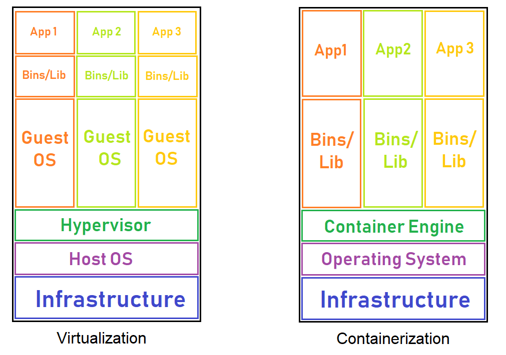

Virtualization is the technology which can simulate your physical hardware (such as CPU cores, memory, disk) and represent it as seperate machine. It has its own Guest OS, Kernel, process, drivers and etc. Therefore, it is hardware level virtualization. Most common technology is VMware and VirtualBox.
Containerization is os-level virtualization. It doesn't simulate the entire physical machine. It just simulate the OS of your machine. Therefore multiple applications can share the same OS kernel. Container play similar roles to virtual machine but without hardware virtualization. Most common container technology is Docker
